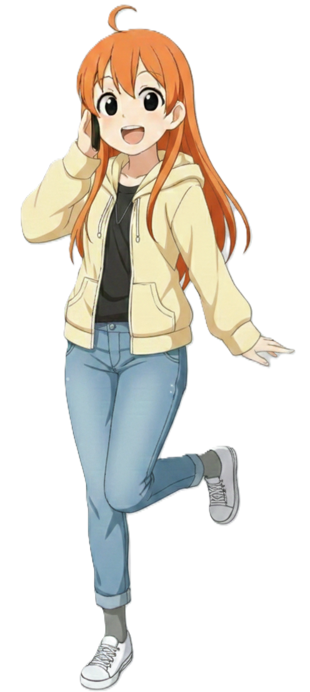
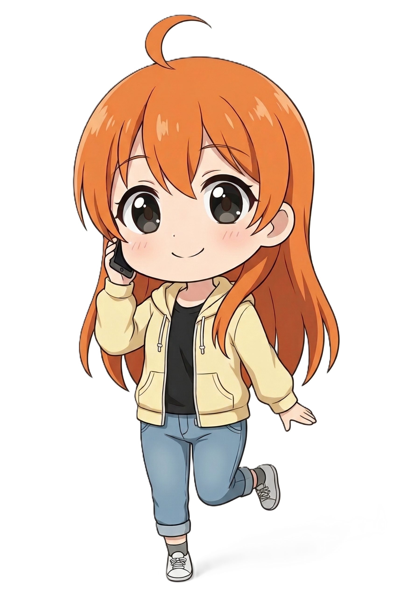

전노아 빈효선
Jeon Noa | 田露娥 | Tanaka Noa
| 전노아 Jeon Noa |
|
|---|---|
|
 기본 SD한국철도공사 빈효선 공식 마스코트
|
|
| 이름 | 전노아 (Jeon Noa) 日本名: Tanaka Noa (田中 露娥) |
| 나이 | 20세 (2005년생) |
| 생일 | 5월 2일 [1] |
| 신분 | 평안명대학교 사회과학대학 행정학과 1학년 (재학) |
| 신장 | 154.6cm |
| 출신지 | 효빈광역시 안천구 당가동 |
| 학력 |
당가초등학교 (졸업) 당가중학교 (졸업) 당가고등학교 (전학) 중수여자고등학교 (졸업) 평안명대학교 (행정학 / 재학) |
| 가족 관계 | 부모님, 오빠 |
| MBTI | ENFJ (정의로운 사회운동가) |
| 별명 | 정의의 관종, 어뮤즈의 광견, 철도부의 구원자, 참이슬 요정 |
| 성우 |
日: 마에다 카오리 [2] 韓: 김현지 |
"제가 나서야 완벽하게 해결되거든요! 저한테 맡겨주세요! (찡긋)
...근데 행정 예산이 아예 없다고요? 그럼 옆 부서 예산이라도 합법적으로 뜯어오면 되죠! 기안서 서류철 당장 가져와요!"
1. 개요
아이돌처럼 상큼하게 등장해서 거침없이 행정 서류 결재를 받아내는 기획팀의 불도저입니다.
효빈권 광역전철 빈효선을 상징하는 마스코트 캐릭터입니다. 빈효선 노선 자체는 2017년에 개통했지만, 캐릭터 전노아는 노선 개통 3년 뒤인 2020년에 뒤늦게 기획되어 화려하게 데뷔했습니다. 직업은 대학생으로, 효빈시 안천구에 위치한 평안명대학교 행정학과 1학년에 재학 중인 파워 인싸 새내기이자 대학교 조별과제 생태계의 든든한 리더입니다.
태생적으로는 효빈교통공사 소속(1~8호선)이 아닌 한국철도공사(코레일) 관할 소속 캐릭터입니다. 하지만 워낙 붙임성이 좋고 활동 반경이 넓어, 소속의 벽을 허물고 효빈교통공사 마스코트들과 아예 한 팀처럼 묶여서 활동하고 있습니다. 빈효선의 상징색은 청량한 '연청색(#6677CC)'이지만, 본인의 퍼스널 컬러는 톡톡 튀는 오렌지색(귤색)으로 어디서든 눈에 띄는 존재감을 자랑합니다.
메타적으로는 당시 코레일의 정시원 효빈지역본부장이 "국가 철도가 유치하게 캐릭터 사업을 하냐"며 반대하던 본사 임원들을 300페이지 분량의 기획 보고서로 설득하여 2020년에 탄생시킨, 이른바 '친딸' 같은 캐릭터입니다. 정시원 본부장의 애정과 오타쿠적 열정이 완벽하게 농축된 결정체로 평가받습니다.
2. 상세 설정
2.1. 성격 및 특징 (정의로운 관종)
"정리·요약·절차의 화신이자, 주목받는 것을 세상에서 제일 좋아하는 정의로운 관종"입니다.
주목받는 것을 좋아하고, 칭찬 한 마디만 들으면 기뻐서 역사 한복판에서 춤을 출 정도로 흥이 넘치는 전형적인 ENFJ 성향입니다. 하지만 단순히 관심만 끄는 성격이 절대 아닙니다. 불합리한 행정 처리나 윗선에서 "전례가 없어 안 됩니다"라는 핑계를 대는 순간, 관련 법규와 행정 절차법을 끝까지 물고 늘어지며 될 때까지 기안서를 통과시키는 무서운 집요함을 발휘합니다. 이때 목소리가 순식간에 낮게 착 가라앉으며 카리스마를 뿜어냅니다.
평소에는 아이돌 음악방송 MC 톤으로 회의나 조별 과제를 주도하며, 방대하고 꼬여있는 내용을 즉석에서 깔끔하게 세 줄로 압축 요약하는 사기적인 능력이 탁월합니다. "팩트 확인 → 쟁점 요약 → 선택지 제시 → 액션 플랜 확정"으로 숨 쉴 틈 없이 몰아치는 전노아식 대화 패턴은 그녀의 트레이드마크입니다. 이 유능함 탓에 평생 '일 복'이 터져버린 슬픈 운명을 안고 있습니다.
일할 때나 기획을 할 때는 숨 막히는 완벽주의자지만, 일상적인 생활력은 다소 부족합니다. 학식 메뉴를 못 골라 10분 넘게 서성이거나, 두뇌를 한계까지 사용하여 기획안을 짠 뒤 급격한 혈당 저하로 책상에 쓰러지는 등 귀여운 허당끼가 다분합니다. 이럴 때마다 후배인 6호선 라세나가 익숙하게 초코바를 챙겨주곤 합니다.
2.2. 학력 및 능력
안천구 당가동 토박이로 당가초, 당가중, 당가고를 다니다가, 고등학교 2학년 때 효빈시 명문 학군인 중수여자고등학교로 전학을 왔습니다. 학업 성적은 평범한 편이었으나, 압도적인 언변과 통솔력으로 학생회와 동아리 활동에서 전설적인 두각을 나타냈습니다. 현재는 평안명대학교 행정학과에 진학해 행정의 달인으로 성장 중입니다.
| 과목 | 등급 (내신) | 비고 |
|---|---|---|
| 국어(화법/작문) | 1등급 | 논리적인 말하기와 청중을 압도하는 프레젠테이션 능력은 전교 최상위권입니다. 교수님들이 노아의 발표를 들으며 감탄했다는 일화가 있습니다. |
| 사회(법과 정치) | 1등급 | 행정학도의 뛰어난 자질을 보여줍니다. 조례와 법규를 파악하여 합법적으로 학교 예산을 타내는 데 특화되어 있습니다. |
| 수학/과학 | 3 ~ 4등급 | 복잡한 수식과 계산은 이과생인 임세하나 통계에 밝은 미소하에게 맛있는 밥을 사주고 깔끔하게 하청(?)을 맡기는 지혜로움을 발휘합니다. |
가장 유명한 일화는 중수여고 전학 직후, 부원 미달로 강제 폐부 당하기 직전이었던 '철도탐구동아리'를 구원해 낸 사건입니다. 당시 임세하와 라세나에게 매점 빵으로 포섭당했으나, 오히려 본인이 기장을 맡아 초대형 철도 디오라마 전시회를 기획하며 동아리를 부활시켰습니다. 이때의 경험으로 철도 지식은 행정 및 정책 기획 쪽에 특화된 A- 수준으로 단련되었습니다.
2.3. 정치 성향 (행정 불도저)
- 對 윤대환 (전 효빈시장): 강력한 비판 대상. 행정학 전공자로서, 윤대환 전 시장 재임 시절의 전형적인 탁상행정과 관료주의, 예산 낭비를 강하게 비판합니다. 윤 전 시장의 이름이 나오면 "행정의 기본을 지키지 않은 사례입니다"라며 날을 세우곤 합니다.
- 對 전임 정부 (윤석열 전 대통령 시기): 행정학도의 반면교사. 과거 서브컬처 문화 및 굿즈 사업을 예산 낭비라며 제한하려 했던 정책과 불통 행정에 대해 행정학도로서 몹시 날카로운 비판 의식을 갖고 있습니다. 대학교 전공 수업에서 실패한 정책의 사례로 심도 있게 분석하며 교수님들로부터 좋은 평가를 받고 있습니다.
- 對 박효빈 (현 시장): 행정의 마스터피스로 존경. 꽉 막힌 행정 절차를 합리적인 선에서 빠르게 처리하는 박효빈 시장(1996년생)의 결단력에 완벽하게 매료되었습니다. "보통 한 달이 걸릴 기안을 단 3일 만에 통과시키셨다"며 박 시장의 업무 처리 능력을 칭송하고, 서브컬처 문화를 지켜준 것에 대해 깊은 감사를 표합니다.
2.4. 외형 및 디자인 (상큼한 오렌지빛 인싸)
공식 일러스트에서 가장 먼저 시선을 사로잡는 것은 단연 상큼한 오렌지색 머리카락과 정수리에 뿅 솟아오른 둥근 바보털(아호게)입니다. 얌전하거나 무뚝뚝한 캐릭터들과 달리, 한쪽 다리를 뒤로 살짝 든 채 해맑게 웃고 있는 역동적인 포즈는 그녀의 '쉬지 않고 일하는 파워 기획자'로서의 정체성을 잘 보여줍니다. 일러스트는 나이에 따라 크게 두 가지 버전으로 나뉩니다.
고등학교 교복 버전 (중수여고 시절): 아이보리색 셔츠에 눈에 확 띄는 커다란 빨간색 리본 타이를 매치하고, 짙은 쥐색 플리츠스커트와 검은색 니삭스를 착용했습니다. 이 복장은 단정한 제복 상의를 원했던 정시원 본부장과 아이돌스러운 치마를 원했던 효빈교통공사 최대현 사장이 긴 타협 끝에 도출해 낸 기적의 믹스매치 룩입니다.
대학생 사복 버전 (평안명대 시절): 고등학교 시절보다 머리카락이 길어져서 쉽게 구분할 수 있습니다. 까만색 티셔츠 위에 밝은 레몬 옐로우 컬러의 후드 집업을 걸치고, 스키니 진의 밑단을 롤업한 뒤 스니커즈를 신었습니다. "오늘도 캠퍼스를 뛰어다니며 조별과제를 캐리해야 하는 대학생"의 실용성을 완벽하게 담아냈습니다.
🍊 [비주얼] 일본 누마즈시와의 소름 돋는 자매결연 콜라보
오렌지색 머리, 솟아오른 바보털, 인싸 성격, 심지어 고등학교 교복의 배색까지, 서브컬처 팬이라면 누구나 애니메이션 러브라이브! 선샤인!!의 주인공 '타카미 치카'를 떠올릴 수밖에 없는 디자인입니다. 이는 치카와 생일이 똑같은 정시원 본부장의 맹목적인 팬심이 듬뿍 반영된 결과로 알려져 있습니다.
재미있는 점은 이것이 단순한 오마주로 끝나지 않았다는 것입니다. 효빈광역시와 해당 애니메이션의 무대인 일본 시즈오카현 '누마즈시(沼津市)'가 정식으로 자매결연을 맺으면서, 현재 코레일 빈효선 측에서 '타카미 치카' 본인과 공식 콜라보를 진행하고 있습니다. 치카와 노아가 함께 찍은 포스터가 효빈역에 걸리자 수많은 팬들이 환호하며 성지순례를 오고 있습니다.
2.5. 목소리 및 성우 연기 (외형 불일치와 반전 매력)
전노아의 진정한 매력은 외모와 성우의 묘한 인지부조화, 그리고 상상을 초월하는 뛰어난 연기 폭에서 발산됩니다.
특유의 통통 튀고 텐션 높지만 묘하게 자신감 넘치는 파워 인싸 연기의 정점을 찍었습니다. 평소 "이 사안의 핵심은 세 가지입니닷!" 할 때는 꿀이 뚝뚝 떨어지지만, 무임승차 조원을 발견하거나 업무가 꼬였을 때는 목소리에서 웃음기가 싹 빠집니다. "선배님, 이번 기안에서 이름 뺍니다? 수고하세요." 라며 온도가 영하로 떨어지는 냉혹한 톤 변신은 많은 이들의 소름과 깊은 공감을 유발합니다.
외형은 활발한 귤대장인데, 목소리는 얌전한 소녀 역할을 주로 맡았던 성우가 배정되어 큰 화제가 되었습니다. 하지만 평상시에는 똑 부러진 아나운서 톤을 내다가, 행정 절차가 막히거나 특히 회식 설정이 들어가면 성우 본연의 시원털털한 본성이 튀어나옵니다. 이 다채롭고 훌륭한 연기 폭 덕분에 노아의 캐릭터성이 완벽한 생명력을 얻었습니다.
3. 인간 관계
전노아를 기획하고 세상에 태어나게 한 '창조주이자 영혼의 아버지'입니다. 본사 임원들을 끈질기게 설득하여 캐릭터를 빛 보게 한 장본인입니다. 노아는 자신을 지켜준 정 본부장을 진심으로 존경하고 따르지만, 가끔 본부장님이 서류 귀퉁이에 인쇄된 자신의 일러스트를 보며 흐뭇하게 웃을 때면 인싸인 노아조차 "본부장님... 제발 그러지 마세요! 소름 돋아요!"라며 질색하는 귀여운 관계를 유지합니다.
전학 온 첫날, 부원 미달로 강제 폐부 위기에 처한 세하와 라세나의 간절한 부탁에 얼떨결에 가입했습니다. 특유의 추진력으로 동아리를 화려하게 부활시켰고, 세하의 기계 지식, 라세나의 꼼꼼한 엑셀 장부, 노아의 불도저 기획력이 합쳐져 무적의 팀워크를 이루었습니다. 졸업 후에도 이 셋이 모이면 언제나 노아가 든든한 리더 역할을 수행합니다.
효빈대 소속이 아닌 캐릭터들끼리 뭉친 '비(非)효빈대 아웃사이더 연합'의 든든한 친구입니다. 노아가 조별과제로 지쳐있을 때, 디자인 감각이 뛰어난 라미가 나타나 "네 PPT는 심미성이 떨어져"라며 슬라이드를 완벽하게 고쳐주는 츤데레적 우정을 끈끈하게 나눕니다.
05년생 동갑내기 엘리트 친구입니다. 서로의 전문 분야(행정 기획 vs 통계 데이터)를 완벽하게 존중합니다. 미소하가 객관적인 통계 자료(빨간 바인더)를 넘겨주면, 노아가 그것을 바탕으로 빈틈없는 행정 기안서를 작성해 예산을 확보해 내는 환상의 콤비입니다.
4. 러닝 개그 및 특수 설정
🎙️ "이 행정의 핵심 쟁점은 세 가지입니다."
사업을 설명하거나 누군가를 설득할 때, 항상 손가락 세 개를 펴며 "이 사안의 핵심은 딱 세 가지입니다. 첫째... 둘째... 셋째..." 라며 프레젠테이션을 하듯 말하는 지독한 직업병이 있습니다. 점심 메뉴를 고를 때조차 행정학적 궤변을 섞어 발표하려 들어 친구들이 서둘러 입에 밥을 물려주곤 합니다.
🍺 어뮤즈의 광견 (회식 자리의 텐션 폭발)
평소에는 반짝거리고 똑 부러지는 아이돌 같지만, 부조리한 단어를 듣거나 특히 회식 술자리에 들어가면 목소리 톤이 낮아지며 시원시원한 전투 모드로 돌입합니다. 일본어판 성우의 유쾌한 술자리 별명('어뮤즈의 광견')과 겹쳐 공식 별명으로 굳어졌습니다. 회식 자리에서 기강을 확실하게 잡는 그녀를 상사들도 함부로 말릴 수 없습니다.
😊 행정 프리패스 스마일 (웃는 얼굴의 팩트 폭격)
상대방에게 업무 협조를 요구하거나 예산을 요청할 때, 얼굴은 세상에서 제일 맑고 상큼한 미소를 짓고 있지만 입에서 나오는 말은 철저하게 법규와 행정소송을 근거로 한 완벽한 논리입니다. 듣는 상대방 입장에서는 화를 낼 수도 없고 거절할 수도 없는 완벽한 외통수에 걸리게 됩니다.
5. 여담 (캐스팅 비화 및 미디어 믹스)
- [전설의 내한 회식 캐스팅 사건]: 일본어판 성우 마에다 카오리가 이 배역을 따낸 과정은 레전드 일화로 꼽힙니다. 2022년 내한 행사 후 코레일 관계자들과의 회식 자리에서, 캐릭터 기획안을 우연히 본 그녀는 자리에서 일어나 넥타이를 머리에 두르고 완벽한 취객(?) 행정관 연기를 라이브로 선보였습니다. 이 엄청난 갭 모에와 열정에 압도당한 정시원 본부장이 그 자리에서 "당신 바로 합격이야!"라며 캐스팅을 확정 지었다는 유쾌한 전설이 전해집니다. 이로 인해 '참이슬 요정'이라는 재미있는 별명도 얻게 되었습니다.
- [비주얼] 빈효선의 '산뜻한 스탠다드' 피지컬: 단체 휴가 사진에서 드러난 전노아의 체형은 B84 - W59 - H83으로, 숨겨진 반전이 있다기보다는 보이는 이미지 그대로의 산뜻하고 건강한 밸런스가 매력 포인트입니다. 오렌지색 머리와 대비되는 시원한 파란색 스트라이프 수영복은 빈효선 광역전철의 청량함을 그대로 옮겨놓은 듯합니다. "휴가마저 빈틈없이 즐기겠다"는 특유의 에너지가 느껴집니다.
- 빈효선의 기동성: 광역전철 마스코트답게 발이 매우 빠릅니다. 역내 민원 발생 시 엄청난 속도로 현장에 나타나 상황을 정리하며, 본인은 이를 "행정 효율을 극대화하기 위한 물리적 가속"이라 칭합니다.
- [밈] 개복치 멘탈 보컬과의 평행이론: 빈효선의 상징색이 연청색(#6677CC)이다 보니, 애니메이션 뱅드림!의 캐릭터 '쿠라타 마시로'와 자주 엮입니다. 이미지 컬러는 일치하지만 성향은 완전히 반대입니다. 자신감 없는 마시로와 달리, 파워 인싸인 노아가 마시로의 의상을 입고 당당하게 런웨이를 걷고, 마시로는 노아의 유니폼을 입고 구석에서 부끄러워하는 옷 바꿔입기 팬아트가 큰 인기를 끌었습니다.
- ★ 축! 단독 주인공 TV 애니메이션 제작 확정! ★: 코레일 캐릭터 굿즈 사업이 폭발적인 성공을 거두며 막대한 자본력을 얻게 되자, 정시원 본부장과 최대현 사장의 합작으로 마침내 전노아를 주인공으로 한 공식 TV 애니메이션 방영이 기적적으로 확정되었습니다!
- 명예 효빈교통공사 마스코트: 설정상 한국철도공사(코레일) 소속이지만, 특유의 엄청난 친화력 덕분에 효빈교통공사 홍보 영상이나 포스터에도 늘 자연스럽게 끼어들어 센터 근처에서 당당히 브이를 하고 있습니다.
- 에너지 고갈 부작용: 행정 기획 회의나 PPT 작업을 할 때 에너지를 과도하게 사용하기 때문에, 회의가 끝나고 나면 혈당이 떨어져 책상에 슬라임처럼 널브러집니다. 이때 라세나가 익숙한 듯 깊은 한숨을 쉬며 초콜릿을 챙겨주는 것이 역무실의 훈훈한 일상 풍경입니다.
각주
- 빈효선 광역전철 최초 개통일(2017년 5월 2일)과 동일합니다. 야외 행사가 많아지는 5월 초의 활기찬 기운이 그녀의 인싸 성격과 기가 막히게 잘 맞습니다.
- 성우 마에다 카오리의 유쾌하고 친근한 별명에서 유래했습니다. 노아의 털털한 회식 텐션 설정도 여기서 파생되었습니다.